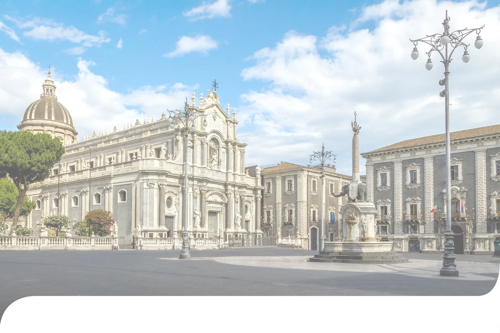
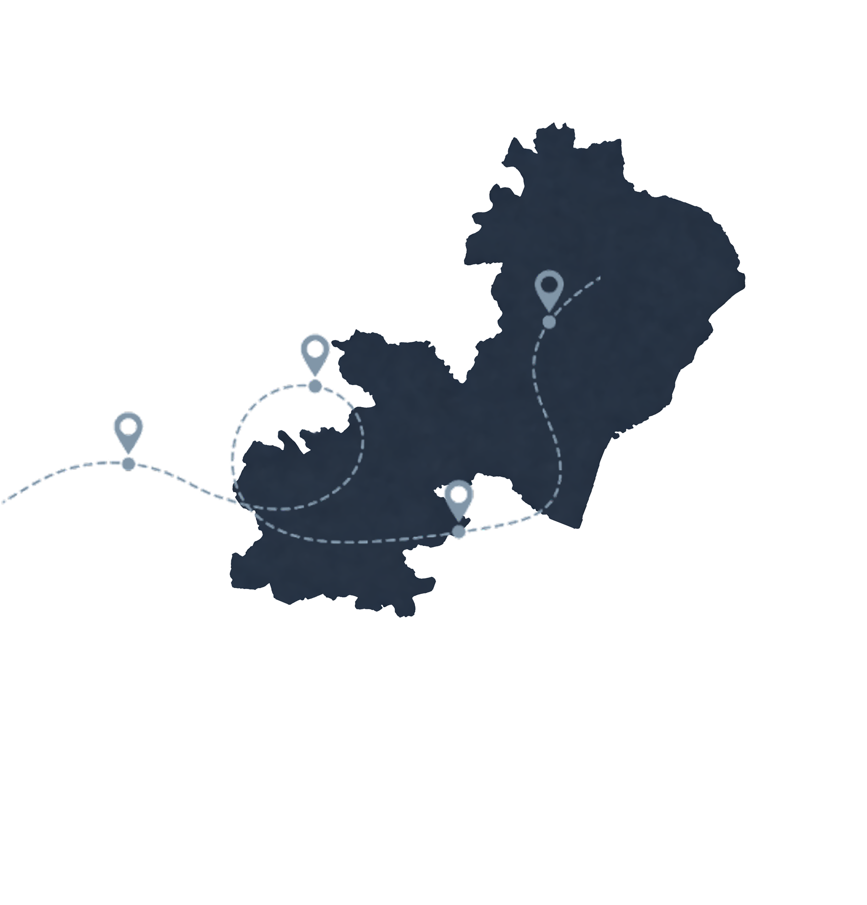
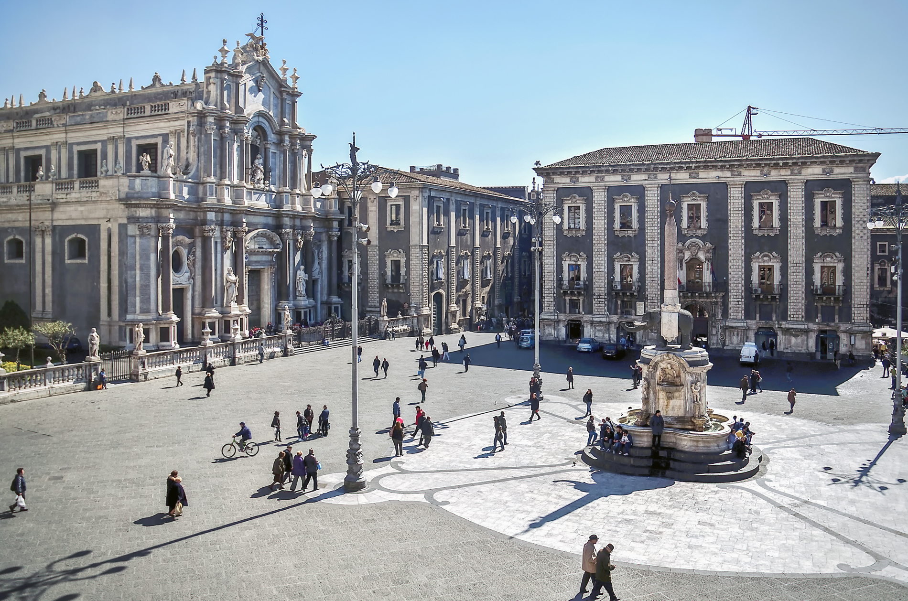
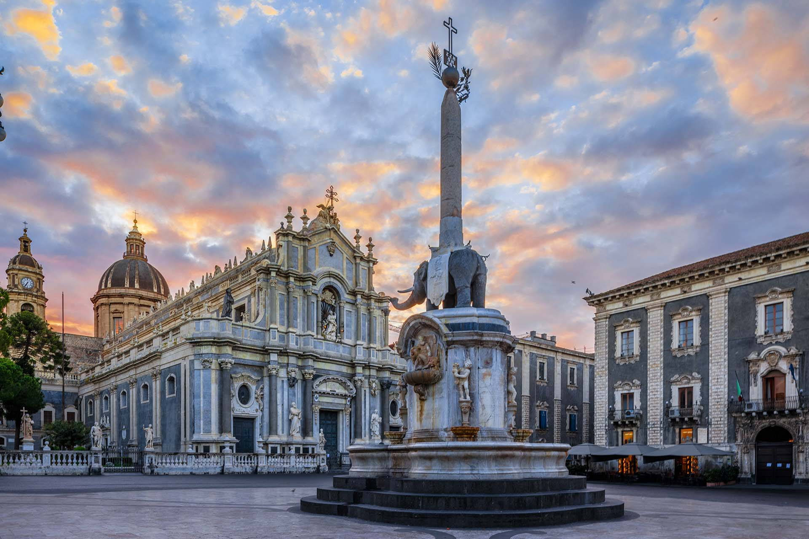

Piazza Municipio, Agrigento

Piazza Marina, Palermo

Piazza Duomo, Enna

Piazza Garibaldi, Caltanissetta

Piazza Garibaldi, Trapani

Piazza Duomo è il cuore pulsante della città di Catania,
un luogo dove storia, arte e vita quotidiana si incontrano
in una scenografia urbana unica.
Situata nel centro storico, la piazza è circondata da alcuni
dei più importanti edifici religiosi e civili di Catania e
rappresenta un punto di riferimento per cittadini
e visitatori.

Al centro della piazza di forma rettangolare domina la Cattedrale di Sant’Agata, dedicata alla patrona della città, Sant’Agata. La cattedrale attuale, ricostruita dopo il terremoto del 1693, si distingue per la facciata barocca in pietra lavica e il portale in marmo, elementi che fondono la grandiosità monumentale con l’identità locale. La cattedrale custodisce numerose opere d’arte, reliquie della santa e testimonianze della devozione catanese che culminano nella famosa festa di Sant’Agata, una delle celebrazioni religiose più imponenti d’Europa.
Di fronte alla cattedrale si trova il Palazzo degli Elefanti, sede del municipio. La sua facciata elegante e armoniosa riflette lo stile barocco catanese e contribuisce a definire l’armonia complessiva della piazza, il palazzo prende il nome dalla celebre Fontana dell’Elefante, posta al centro della piazza, e rappresenta ancora oggi un simbolo del potere civico cittadino.

La Fontana dell’Elefante è senza dubbio l’elemento più iconico della piazza, è realizzata in pietra lavica e marmo nel XVIII secolo da Giovanni Battista Vaccarini, la fontana raffigura un elefante che sostiene un obelisco egizio. Conosciuto dai catanesi come “u Liotru”, l’elefante è diventato simbolo stesso della città, secondo antiche tradizioni popolari, la statua ha anche un valore protettivo, capace di allontanare le eruzioni dell’Etna, sottolineando il legame profondo tra la città e il vulcano che domina l’orizzonte.
Intorno alla piazza si affacciano altri edifici storici, come il Palazzo dei Chierici, antico edificio barocco, e la Porta Uzeda, che collega Piazza Duomo al mare e alle zone portuali. Questi elementi creano una cornice urbana armoniosa, dove ogni edificio contribuisce a raccontare la storia e l’identità della città.
L’attuale aspetto della piazza è il risultato della grande ricostruzione avvenuta dopo il terremoto del 1693, uno dei più devastanti eventi sismici della storia siciliana. Quell’anno, il terremoto rase al suolo gran parte della città medievale, costringendo a una completa riprogettazione urbanistica. La ricostruzione, guidata da architetti visionari come Giovanni Battista Vaccarini, trasformò Catania in una città barocca moderna, con strade ampie, piazze monumentali e prospettive scenografiche che oggi costituiscono il fascino del centro storico.
Piazza Duomo venne concepita come il fulcro di questo nuovo assetto urbano , pensata per collegare il potere religioso, rappresentato dalla cattedrale, e quello civile, incarnato dal municipio, creando un equilibrio simbolico e funzionale tra le istituzioni della città.
Il nome "u Liotru" deriva da un'antica leggenda secondo cui l'elefante avrebbe poteri magici
e protezioni sulla città.
Piazza Duomo è stata spesso utilizzata come set cinematografico e fotografico grazie alla
sua scenografia unica e all'armonia degli edifici circostanti.
Ogni anno, durante la festa di Sant'Agata, la piazza si riempie di migliaia di persone,
trasformandosi in un grande palcoscenico di devozione e tradizione popolare.
Piazza Duomo non è solo un simbolo storico: è un luogo vivo, dove i catanesi si incontrano quotidianamente per passeggiare, fare shopping o prendere un caffè nelle numerose attività che la circondano. La piazza ospita eventi culturali, concerti e celebrazioni religiose, rendendola il vero cuore pulsante di Catania.
L’urbanistica della piazza riflette la pianificazione barocca post-terremoto: le strade si aprono a raggiera, le prospettive sono studiate per valorizzare monumenti e fontane, e ogni elemento architettonico è pensato per creare un senso di ordine e monumentale eleganza. La scelta dei materiali, in particolare la pietra lavica proveniente dai pendii dell’Etna, conferisce al luogo un carattere unico, profondamente legato al territorio e alla geologia della zona.
La piazza offre anche scorci unici sul vulcano Etna, visibile in lontananza, che ricorda costantemente la forza della natura a cui Catania deve la sua storia di distruzione e rinascita.

Piazza Municipio, Agrigento
Piazza Marina, Palermo
Piazza Duomo, Enna
Piazza Garibaldi, Caltanissetta
Piazza Garibaldi, Trapani